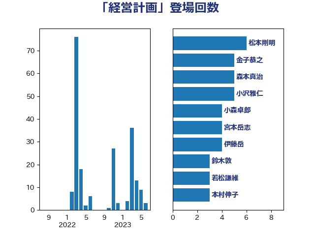

単語「経営計画」

| 松本剛明 | 自由民主党 | 6 回 |
| 金子恭之 | 自由民主党 | 5 回 |
| 森本真治 | 立憲民主党 | 5 回 |
| 小沢雅仁 | 立憲民主党 | 5 回 |
| 小森卓郎 | 自由民主党 | 4 回 |
| 宮本岳志 | 日本共産党 | 4 回 |
| 伊藤岳 | 日本共産党 | 4 回 |
| 鈴木敦 | 国民民主党 | 3 回 |
| 若松謙維 | 公明党 | 3 回 |
| 本村伸子 | 日本共産党 | 3 回 |
| 市村浩一郎 | 日本維新の会 | 3 回 |
| 守島正 | 日本維新の会 | 3 回 |
| 吉川元 | 立憲民主党 | 3 回 |
| 中司宏 | 日本維新の会 | 3 回 |
| 小山展弘 | 立憲民主党 | 2 回 |
| 寺田稔 | 自由民主党 | 2 回 |
| 中川康洋 | 公明党 | 2 回 |
| 三浦靖 | 自由民主党 | 2 回 |
| 長谷川英晴 | 自由民主党 | 1 回 |
| 野田佳彦 | 立憲民主党 | 1 回 |
| 道下大樹 | 立憲民主党 | 1 回 |
| 輿水恵一 | 公明党 | 1 回 |
| 西岡秀子 | 国民民主党 | 1 回 |
| 藤田文武 | 日本維新の会 | 1 回 |
| 萩生田光一 | 自由民主党 | 1 回 |
| 芳賀道也 | 国民民主党 | 1 回 |
| 紙智子 | 日本共産党 | 1 回 |
| 竹詰仁 | 国民民主党 | 1 回 |
| 神谷裕 | 立憲民主党 | 1 回 |
| 石田昌宏 | 自由民主党 | 1 回 |
| 石川香織 | 立憲民主党 | 1 回 |
| 片山大介 | 日本維新の会 | 1 回 |
| 湯原俊二 | 立憲民主党 | 1 回 |
| 浮島智子 | 公明党 | 1 回 |
| 河野義博 | 公明党 | 1 回 |
| 柴愼一 | 立憲民主党 | 1 回 |
| 柳ヶ瀬裕文 | 日本維新の会 | 1 回 |
| 斎藤洋明 | 自由民主党 | 1 回 |
| 山本博司 | 公明党 | 1 回 |
| 山岡達丸 | 立憲民主党 | 1 回 |
| 奥野総一郎 | 立憲民主党 | 1 回 |
| 城井崇 | 立憲民主党 | 1 回 |
| 吉良州司 | 無所属 | 1 回 |
| 古賀之士 | 立憲民主党 | 1 回 |
| 住吉寛紀 | 日本維新の会 | 1 回 |
| 伊藤渉 | 公明党 | 1 回 |
| 伊藤孝恵 | 国民民主党 | 1 回 |
| 中田宏 | 自由民主党 | 1 回 |